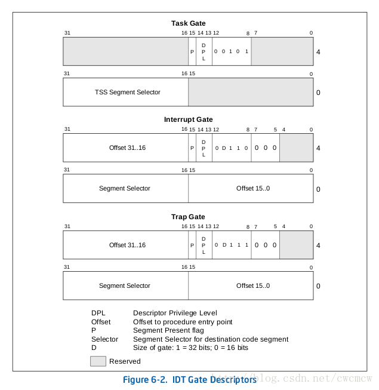
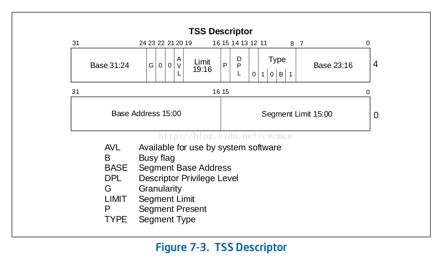

关键词解释 启动区: (bootsector) 软盘第一个的扇区称为启动区。那么什么是扇区呢？计算机读写软盘的时候，并不是一个字节一个字节地读写的，而是以512字节为一个单位进行读写。因此，软盘的512字节就称为一个扇区。一张软盘的空间共有1440KB, 也就是1474560字节，除以512得2880, 这也就是说一张软盘共有2880个扇区。那为什么第一个扇区称为启动区呢？那是因为计算机首先从最初一个扇区开始读软盘，然后去检查这个扇区最后2个字节的内容。 IPL: （initial program loader）启动程序加载器。启动区只有区区512字节，实际的操作系统不像hello-os这么小，根本装不进去。所以几乎所有的操作系统，都是把加载操作系统本身的程序放在启动区里的。有鉴于此，有时也将启动区称为IPL。但hello-os没有加载程序的功能，所以HELLOIPL这个名字不太顺理成章。如果有人正义感特别强，觉得“这是撒谎造假，万万不能容忍！＂，那也可以改成其他的名字。但是必须起一个8字节的名字，如果名字长度不到8字节的话，常要在最后补上空格。 第1天 环境windows 二进制编辑器 notepad++安装hexeditor插件 汇编编辑器 vscode安装x86 and x86_64 Assembly 编译需要使用光盘中的nask编译器 1.1. vmware启动img 创建系统选择other/other 创建好需要添加硬件，选择软盘，然后使用文件，选择img即可启动 第2天 2.1. 标准FAT12软盘格式 1 2 3 4 5 6 7 8 9 10 11 12 13 14 15 16 17 18 19 20 21 ; 以下的记述用于标准FAT12格式的软盘 JMP entry DB 0x90 DB "HELLOIPL" ; 启动区的名称可以是任意的字符串 DW 512 ; 每个扇区（sector）的大小（必须为512字节） DB 1 ; 簇（cluster）的大小（必须为1个扇区） DW 1 ; FAT的起始位置（一般从第一个扇区开始） DB 2 ; FAT的个数（必须为2） DW 224 ; 根目录的大小（一般设成224项） DW 2880 ; 该磁盘的大小（必须是2880扇区） DB 0xf0 ; 磁盘的种类 DW 9 ; FAT的长度（必须是9扇区） DW 18 ; 1个磁道（track）有几个扇区（必须是18） DW 2 ; 磁头数（必须是2） DD 0 ; 不使用分区，必须是0 DD 2880 ; 重写一次磁盘大小 DB 0, 0, 0x29 ; 意义不明，固定 DD 0xffffffff ; （可能是）卷标号码 DB "HELLO-OS " ; 磁盘的名称（11字节） DB "FAT12 " ; 磁盘格式名称（8字节） RESB 18 ; 先空出18字节
2.2. 汇编代表性寄存器介绍 16位寄存器 1 2 3 4 5 6 7 8 AX ---- accumulator 累加寄存器 CX ---- counter 计数寄存器 DX ---- data 数据寄存器 BX ---- base 基址寄存器 SP ---- stack pointer 栈指针寄存器 BP ---- base pointer 基址指针寄存器 SI ---- source index 源变址寄存器 DI ---- destination index 目的变址寄存器
8位寄存器 8位寄存器为16位寄存器的扩展，AL和AH一起代表AX，并不是单独的寄存器
1 2 3 4 5 6 7 8 AL ---- accumulator 累加寄存器低位 CL ---- counter 计数寄存器低位 DL ---- data 数据寄存器低位 BL ---- base 基址寄存器低位 AH ---- accumulator 累加寄存器高位 CH ---- counter 计数寄存器高位 DH ---- data 数据寄存器高位 BH ---- base 基址寄存器高位
32位寄存器 32位系统中使用的32位寄存器，低16位和上述16位相同，高16位没有寄存器名字 32位寄存器加E代表，如EAX, ECX, EDX, EBX, ESP, EBP, ESI, EDI 段寄存器，16位 1 2 3 4 5 6 ES ---- extra segment 附加段寄存器 CS ---- code segment 代码段寄存器 SS ---- stack segment 栈段寄存器 DS ---- data segment 数据段寄存器 FS ---- segment part 2 没有名称 GS ---- segment part 3 没有名称
2.3. CPU和内存 CPU寄存器很少，32位也只有44个字节的空间，所以需要内存当外部储存器 内存和CPU使用管脚连接，速度虽然光速，但是比起来内部寄存器还是慢很多 程序代码储存在内存中，一条一条读取出来进行运行 0xf0000附近存在bios本身启动区内容的装载地址为0x00007c00 -- 0x00007dff，为IBM和intel规定的。所以ORG指令选择此处为起始地址，也仅有512字节 第3天 3.1. 软盘构成 一面80个柱面 磁盘有两面 每个柱面18个扇区 一个扇区512字节 一共80 * 2 * 18 * 512 = 1474560 Byte = 1440 KB C0-H0-S1代表柱面0，磁头0，扇区1扇区从1开始计数，柱面从0开始计数 (1) 软盘保存文件 文件名写在0x0002600的地方 文件内容写在0x004200的地方 编译生成的第三阶段启动程序代码在0x004200位置 3.2. 内存寻址 ES : BX代表内存寻址的地址，其中BX为0-3位，ES为4-位。如ES=0x0820，BX=0，代表0x8200地址。总内存为12位，1M左右。内存0x7c00-0x7dff为启动区使用，0x7e00-0x9fbff没有什么用，留给操作系统开发使用 内存寻址需要指定段寄存器DS，不然就会加上其16倍的数据，所以一般DS = 0 3.3. 汇编和C语言链接 使用汇编可以编译出.obj（.o）文件，这个文件和C文件编译出来的是一个效果 可以使用objdump来查看c语言生成的汇编指令代码 既然都是原生汇编，按照c语言生成的汇编格式来写汇编，同样可以链接到c语言中 1 2 3 4 5 6 7 8 9 10 11 12 13 14 15 ; naskfunc ; TAB=4 [FORMAT "WCOFF"] ; 制作目标文件的模式 [BITS 32] ; 制作32位的机器语言 ; 制作目标文件的信息 [FILE "naskfunc.nas"] ; 源文件名称 GLOBAL _io_hlt ; 函数名 ; 函数的实现 [SECTION .text] ; text段，储存程序代码 _io_hlt: ; void io_hlt(void); HLT RET
3.4. BIOS介绍 BIOS是使用16位机器语言，32位模式不能调用BIOS函数 VRAM（video RAM）在当前画面模式下是0xa0000 ~ 0xaffff，这个是在BIOS文档中INT 0x10说明最后写着 1) BIOS函数 (1) 0x10 设置画面模式 设置AH寄存器为00 设置AL寄存器为下面的值（省略部分模式）0x03: 16色字符模式，80 x 25 0x12: VGA图形模式，640 x 480 x 4位彩色模式，独特的4面储存模式 0x13: VGA图形模式，320 x 200 x 8位彩色模式，调色板模式 0x12: VGA图形模式，800 x 600 x 4位彩色模式，独特的4面储存模式（部分显卡不支持此模式） 无返回值 1 2 3 4 ; 设置屏幕模式 MOV AL,0x13 ; VGA图形，320 x 200 x 8位颜色 MOV AH,0x00 INT 0x10
3.5. cpu介绍 为什么写程序使用i486p，这个是cpu指令集 i486p是给486cpu使用，但是如果只是用16位寄存器，也可以8086用 intel系列cpu家谱 1 8086->80186->286->386->486->Pentium->PentiumPro->PentiumII->PentiumIII->Pentium4->...
第4天 1. 图形化界面 参考linux-kernel启动过程
2. 调色板 调色板是显卡的一个模块，由于颜色只有8位，也就是256色，但是正常RGB有24位 所以我们可以给显卡设置256种颜色，0-255分别表示一种颜色 在用的时候直接设置对应内存为一个号码，显卡就会直接将对应位置显示成对应的颜色 但是cpu中断和调色板的io存取需要使用汇编来实现，c语言无法实现 设置调色板
先屏蔽中断 将想要设置的号码（0-255）写入到0x03c8 然后按照RGB的顺序写入0x03c9，想要继续设定，就直接继续写就行了 想要读出来对应号码的RGB，将号码写入到0x03c7，再从0x03c9读取3次。同理继续读就是下一个号码 最后恢复中断位 1 2 3 4 5 6 7 8 9 10 11 12 13 14 void set_palette (int start, int end, unsigned char *rgb) int i, eflags; eflags = io_load_eflags (); io_cli (); io_out8 (0x03c8 , start); for (i = start; i <= end; i++) { io_out8 (0x03c9 , rgb[0 ] / 4 ); io_out8 (0x03c9 , rgb[1 ] / 4 ); io_out8 (0x03c9 , rgb[2 ] / 4 ); rgb += 3 ; } io_store_eflags (eflags); return ; }
第5天 1. 字符点阵 假设一个字符占用像素点为8x16，那么可以使用char[16]表示一个字符的点阵 作者找其他人要了一个hankaku.txt里面包含了char里面所有可见字符的点阵，总共由256个字符，占用4096个字节 在对应的vram位置设置color就可以直接显示字符 1 2 3 4 5 6 7 8 9 10 11 12 13 14 15 16 17 18 19 20 21 22 23 24 25 26 27 extern char hankaku[4096 ];static void put_font8 (char *vram, int xsize, int x, int y, char color, char c) int i, j; char *font8 = hankaku + c * 16 ; for (i = 0 ; i < 16 ; ++i) { char *p = vram + (y + i) * xsize + x; char tmp = font8[i]; for (j = 0 ; j < 8 ; ++j) { if ((tmp & (0x80 >> j)) > 0 ) { p[j] = color; } } } }
2. GDT和IDT 2.1. 分段 因为操作系统可以执行多个进程，但是每个进程使用的内存是独立的，需要使用分段让每个进程使用的内存隔开 2.2. GDT: global segment descriptor table 全局段记录表 段寄存器是16位，一位一个字节。一个段描述结构体是8个字节占用3位，所以低三位不能用，只有13位，一共8192个段描述结构体组成表 段寄存器可以指示65536个字节（64KB），cpu没这么大内存存储，所以需要放到内存里面，我们可以任意指定一块内存，将首地址和个数信息放到GDTR寄存器中就好了 段描述结构体见下面定义，来自于cpu手册，一共8个字节 1 2 3 4 5 6 7 8 9 10 11 12 13 14 15 16 struct desc_struct { u16 limit0; u16 base0; u16 base1 : 8 ; u16 type : 4 ; u16 s : 1 ; u16 dpl : 2 ; u16 p : 1 ; u16 limit1 : 4 ; u16 avl : 1 ; u16 l : 1 ; u16 d : 1 ; u16 g : 1 ; u16 base2 : 8 ; } __attribute__((packed));
随意取内存一段地址 0x00270000 - 0x0027ffff 这一段存储 将所有段初始化成全0 将段号1设置位cpu管理段，在内存的地址为0，大小为4GB，为32位内管理的最大内存，可读可写 段号为2的设置为bootpack.hrb程序所在的内存段，地址在0x00280000，大小512K，可读可执行 最后通过汇编导出的函数写入GDTR，因为c语言无法设置GDTR 1 2 3 4 5 6 7 8 9 10 11 12 13 14 15 16 17 18 19 20 21 22 23 24 25 26 27 28 29 30 31 32 33 34 35 36 37 #define ADR_GDT 0x00270000 #define LIMIT_GDT 0x0000ffff #define ADR_BOTPAK 0x00280000 #define LIMIT_BOTPAK 0x0007ffff #define AR_DATA32_RW 0x4092 #define AR_CODE32_ER 0x409a static void set_segmdesc (struct SEGMENT_DESCRIPTOR *sd, unsigned int limit, int base, int ar) if (limit > 0xfffff ) { ar |= 0x8000 ; limit /= 0x1000 ; } sd->limit_low = limit & 0xffff ; sd->base_low = base & 0xffff ; sd->base_mid = (base >> 16 ) & 0xff ; sd->access_right = ar & 0xff ; sd->limit_high = ((limit >> 16 ) & 0x0f ) | ((ar >> 8 ) & 0xf0 ); sd->base_high = (base >> 24 ) & 0xff ; return ; } void init_gdtidt (void ) struct SEGMENT_DESCRIPTOR *gdt = (struct SEGMENT_DESCRIPTOR *)ADR_GDT; struct GATE_DESCRIPTOR *idt = (struct GATE_DESCRIPTOR *)ADR_IDT; int i; for (i = 0 ; i < LIMIT_GDT / sizeof (struct SEGMENT_DESCRIPTOR); i++) { set_segmdesc (gdt + i, 0 , 0 , 0 ); } set_segmdesc (gdt + 1 , 0xffffffff , 0x00000000 , AR_DATA32_RW); set_segmdesc (gdt + 2 , LIMIT_BOTPAK, ADR_BOTPAK, AR_CODE32_ER); load_gdtr (LIMIT_GDT, ADR_GDT); ... }
2.3. IDT: interrupt descriptor table 
1 2 3 4 5 6 7 8 9 10 11 12 13 14 15 16 17 18 struct idt_bits { u16 ist : 3 ; u16 zero : 5 ; u16 type : 5 ; u16 dpl : 2 ; u16 p : 1 ; } __attribute__((packed)); struct gate_struct { u16 offset_low; u16 segment; struct idt_bits bits; u16 offset_middle; #ifdef CONFIG_X86_64 u32 offset_high; u32 reserved; #endif } __attribute__((packed));
2.4. GDT、IDT、LDT和TSS的关系 GDT，IDT都是全局的。LDT是局部的（在GDT中有它的描述符） GDT用来存储描述符（门或非门）；系统中几个CPU,就有几个GDT IDT整个系统只有一个 系统启动时候需要初始化GDT和IDT。LDT和进程相关，并不一定必有 TSS: Task-State Segment，任务状态段，保存任务状态信息的系统段 TSS只能存在于GDT中 Task-Gate Descriptor，任务门描述符，用来间接的宝玉引用任务。可以放到GDT、LDT、IDT中，里面的TSS段选择指向GDT的TSS描述符 下图为32位TSS结构 
第六天 中断处理 1. PIC: Programmable interrupt controller 可编程中断控制器 就是一个芯片，将8个中断信号合成一个中断信号输出给cpu 当前电脑上不止8个外部设备，所以使用两个pic合并成15个中断信号（主PIC的IRQ2被从PIC占据） PIC是外部设备，不能直接使用C语言的等于赋值，需要使用io_out8 主从PIC的寄存器赋值需要使用端口进行，具体端口定义如下 1 2 3 4 5 6 7 8 9 10 11 12 13 #define PIC0_ICW1 0x0020 #define PIC0_OCW2 0x0020 #define PIC0_IMR 0x0021 #define PIC0_ICW2 0x0021 #define PIC0_ICW3 0x0021 #define PIC0_ICW4 0x0021 #define PIC1_ICW1 0x00a0 #define PIC1_OCW2 0x00a0 #define PIC1_IMR 0x00a1 #define PIC1_ICW2 0x00a1 #define PIC1_ICW3 0x00a1 #define PIC1_ICW4 0x00a1
0x00-0x1f中断号不能使用，是cpu内部用于产生错误的中断号，所以从0x20开始设置PIC的代码如下 1 2 3 4 5 6 7 8 9 10 11 12 13 14 15 16 17 void init_pic () io_out8 (PIC0_IMR, 0xff ); io_out8 (PIC1_IMR, 0xff ); io_out8 (PIC0_ICW1, 0x11 ); io_out8 (PIC0_ICW2, 0x20 ); io_out8 (PIC0_ICW3, 1 << 2 ); io_out8 (PIC0_ICW4, 0x01 ); io_out8 (PIC1_ICW1, 0x11 ); io_out8 (PIC1_ICW2, 0x28 ); io_out8 (PIC1_ICW3, 1 << 1 ); io_out8 (PIC1_ICW4, 0x01 ); io_out8 (PIC0_IMR, 0xfb ); io_out8 (PIC1_IMR, 0xff ); }
2. 中断号对应的中断类型 硬件中断号 系统中断号 用途 IRQ0 INT20 IRQ1 INT21 PS/2键盘 IRQ2 INT22 PIC1的中断 IRQ3 INT23 IRQ4 INT24 IRQ5 INT25 IRQ6 INT26 IRQ7 INT27 初始化PIC可能引发的中断 IRQ8 INT28 IRQ9 INT29 IRQ10 INT2a IRQ11 INT2b IRQ12 INT2c PS/2鼠标 IRQ13 INT2d IRQ14 INT2e IRQ15 INT2f
3. 注册中断函数 也就是将中断函数地址写入idt中 找到对应中断号对应的idt地址，将函数地址和对应的段号放进去，设置标志位即可 由于中断最终要调用IRETD汇编指令退出，所以使用汇编函数调用c函数的方式来进行，并在里面存储了中断打断的进程的上下文信息 1 2 3 4 set_gatedesc (idt + 0x21 , (int )asm_inthandler21, 2 * 8 , AR_INTGATE32);set_gatedesc (idt + 0x27 , (int )asm_inthandler27, 2 * 8 , AR_INTGATE32);set_gatedesc (idt + 0x2c , (int )asm_inthandler2c, 2 * 8 , AR_INTGATE32);
4. 中断处理 中断中尽可能少执行代码，所以将中断数据放到全局变量中，在外部进程上下文中读取变量进行处理 第七天 FIFO与鼠标控制 1. 鼠标键盘数据读取 鼠标键盘都属于键盘控制电路，数据获取都在端口0x0060 只能通过中断号来判断此端口数据是属于鼠标还是键盘 2. fifo 由于中断数据可能很多，所以需要使用fifo进行存取，防止数据丢失 fifo自己参考linux的实现，没有使用书上的实现，具体原理查看 linux源码分析-kfifo 3. 鼠标初始化 由于一开始鼠标并不是必须品，后来鼠标才加入 鼠标加入后，当时使用者并不怎么使用，为了防止频繁中断，将鼠标控制默认关闭了 所以想要使用鼠标，还需要进行特定操作进行激活鼠标 1 2 3 4 5 6 7 8 9 10 11 12 13 14 15 16 17 18 19 20 21 22 23 24 25 26 27 28 29 30 31 32 33 34 35 36 37 38 39 40 41 42 43 44 45 #define PORT_KEYDAT 0x0060 #define PORT_KEYSTA 0x0064 #define PORT_KEYCMD 0x0064 #define KEYSTA_SEND_NOTREADY 0x02 #define KEYCMD_WRITE_MODE 0x60 #define KBC_MODE 0x47 void wait_KBC_sendready () for (;;) { if ((io_in8 (PORT_KEYSTA) & KEYSTA_SEND_NOTREADY) == 0 ) { break ; } } } void init_keyboard () wait_KBC_sendready (); io_out8 (PORT_KEYCMD, KEYCMD_WRITE_MODE); wait_KBC_sendready (); io_out8 (PORT_KEYDAT, KBC_MODE); return ; } #define KEYCMD_SENDTO_MOUSE 0xd4 #define MOUSECMD_ENABLE 0xf4 void enable_mouse () wait_KBC_sendready (); io_out8 (PORT_KEYCMD, KEYCMD_SENDTO_MOUSE); wait_KBC_sendready (); io_out8 (PORT_KEYDAT, MOUSECMD_ENABLE); }
第八天 鼠标控制与32位模式切换 1. 鼠标数据解读 鼠标使能后会先发送0xfa数据，然后会连续三个中断发送三个字节数据